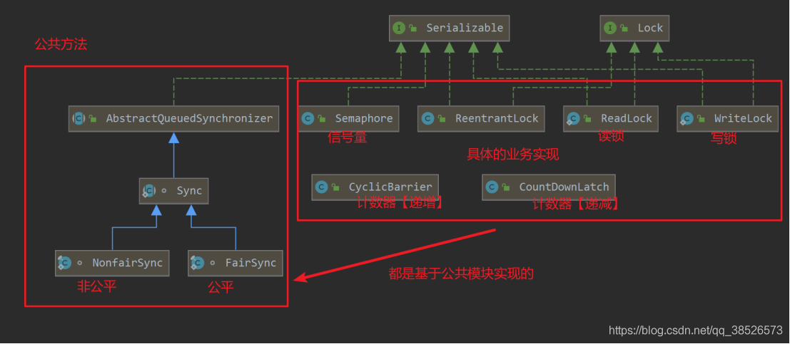
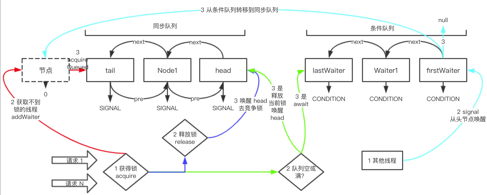
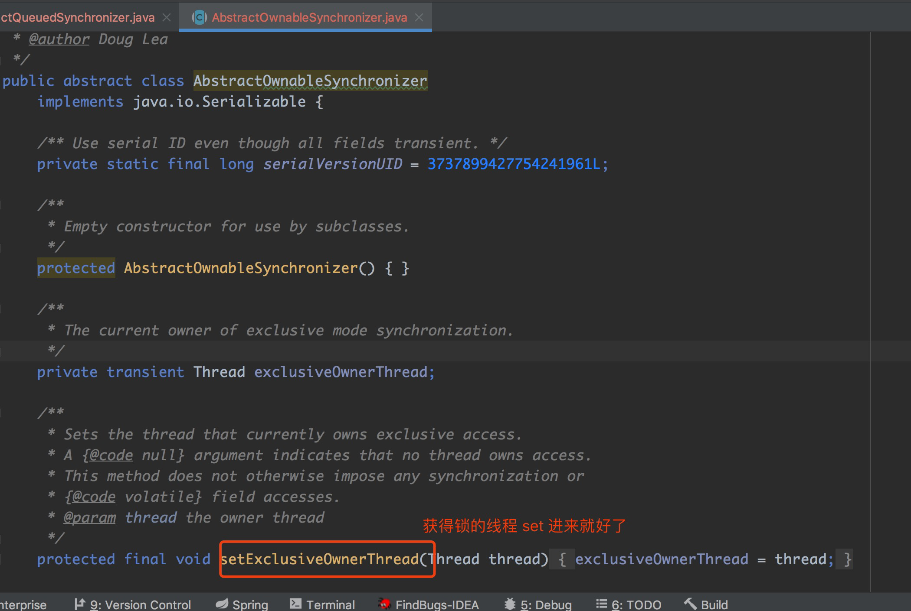
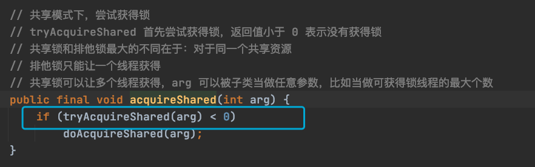
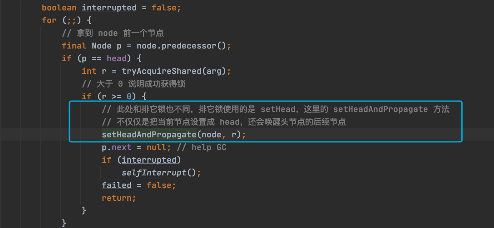

AQS 同步器 是一种模版方法的设计，事先准备了一些锁相关的方法 ，juc包中的很多锁都是利用AQS实现，如下图。如果我们掌握了AQS原理 也能实现一个锁。AQS方法较多 ，对于源码学习而言，一定要先熟悉原理，从原理入手，串通整个流程，放眼观全局，一定不要掉入到某个细节之中。

整体结构

这个图总结了 AQS 整体架构的组成，和部分场景的动态流向，图中两个点说明一下，方便大家 观看。
- AQS 中队列只有两个：同步队列 + 条件队列，底层数据结构两者都是链表；
- 图中有四种颜色的线代表四种不同的场景，1、2、3 序号代表看的顺序。
- 对于条件队列，大家可以咱先不关注，条件队列的作用类似 对象中的wait()和notify()方法，这个我们会单独进行讲解，为了更好的理解AQS，我们先重点关注 同步队列。
- 那么 我们对AQS的作用，进行一个概括就是：
- 通过一个共享变量，能够完成 线程的互斥。
- 抢不到资源的线程要被阻塞，存放进同步队列，并且资源释放时能被唤醒。
类注释信息
养成好习惯，我们还是看一下AQS的注释信息，可以更好的理解AQS的作用。
- 提供了一种框架，自定义了先进先出的同步队列，让获取不到锁的线程能进入同步队列中 排队；
- 同步器有个状态字段，我们可以通过状态字段来判断能否得到锁，此时设计的关键在于依 赖安全的 atomic value 来表示状态（虽然注释是这个意思，但实际上是通过把状态声明 为 volatile，在锁里面修改状态值来保证线程安全的）；
- 子类可以通过给状态 CAS 赋值来决定能否拿到锁，可以定义那些状态可以获得锁，哪些 状态表示获取不到锁（比如定义状态值是 0 可以获得锁，状态值是 1 就获取不到锁）；
- 子类可以新建非 public 的内部类，用内部类来继承 AQS，从而实现锁的功能；
- AQS 提供了排它模式和共享模式两种锁模式。排它模式下：只有一个线程可以获得锁，共 享模式可以让多个线程获得锁，子类 ReadWriteLock 实现了两种模式；
- 内部类 ConditionObject 可以被用作 Condition，我们通过 new ConditionObject () 即 可得到条件队列；
- AQS 实现了锁、排队、锁队列等框架，至于如何获得锁、释放锁的代码并没有实现，比如 tryAcquire、tryRelease、tryAcquireShared、tryReleaseShared、isHeldExclusively 这些方法，AQS 中默认抛 UnsupportedOperationException 异常，都是需要子类去实 现的；
- AQS 继承 AbstractOwnableSynchronizer 是为了方便跟踪获得锁的线程，可以帮助监 控和诊断工具识别是哪些线程持有了锁；
- AQS 同步队列和条件队列，获取不到锁的节点在入队时是先进先出，但被唤醒时，可能并 不会按照先进先出的顺序执行。
以上时AQS中比较重要的类信息。
定义
AQS 类定义代码如下：
1 | public abstract class AbstractQueuedSynchronizer |
可以得出两点
AQS 是个抽象类，就是给各种锁子类继承用的，AQS 定义了很多如何获得锁，如何释放 锁的抽象方法，目的就是为了让子类去实现；
继承了 AbstractOwnableSynchronizer，AbstractOwnableSynchronizer 的作用就是为 了知道当前是那个线程获得了锁，方便监控用的，代码如下：

类属性
AQS 的属性可简单分为四类：同步器简单属性、同步队列属性、条件队列属性、公用 Node。
简单属性
1 | // 同步器的状态，根据当前状态进行判断是否可以获得当前锁 |
最重要的就是 state 属性，是 int 属性的，所有继承 AQS 的锁都是通过这个字段来判断能不能 获得锁，能不能释放锁。state就是咱们之前提的共享资源。
同步队列属性
线程获得不到锁时，就会封装成Node进入到同步队列的队尾。释放锁时，就会从同步队列头开始释放一个排队的线程，让线程重新去竞争锁。所以同步队列的主要作用阻塞获取不到锁的线程，并在适当时机释放这些线程。同步队列底层数据结构是个双向链表，我们从源码中可以看到链表的头尾，如下：
1 | // 同步队列的头。 |
源码中的 Node 是同步队列中的元素，但 Node 被同步队列和条件队列公用，所以我们在说完 条件队列属性之后再说 Node。
条件队列属性
条件队列和同步队列的功能一样，管理获取不到锁的线程，底层数据 结构也是链表队列，但条件队列不直接和锁打交道，但常常和锁配合使用，是一定的场景下，对 锁功能的一种补充。此外，条件队列底层是单链表，后面会详细介绍。
1 | // 条件队列，从基础属性上可以看出是链表队列 |
ConditionObject 是实现 Condition 接口的，Condition 接口相当于 Object 的各种监控方法， 比如 Object#wait ()、Object#notify、Object#notifyAll 这些方法，我们可以先这么理解，后 面会细说。
公用Node
Node 非常重要， 即是同步队列的节点， 又是条件队列的节点， 在入队的时候， 我们用 Node 把线程包装一下，然后把 Node 放入两个队列中，我们看下 Node 的数据结构，如下：
1 | static final class Node { |
从 Node 的结构中， 我们需要重点关注 waitStatus 字段， Node 的很多操作都是围绕着 waitStatus 字段进行的。
Node 的 pre、next 属性是同步队列中的链表前后指向字段，nextWaiter 是条件队列中下一个 节点的指向字段，但在同步队列中，nextWaiter 只是一个标识符，表示当前节点是共享还是排 它模式。
同步器状态
state 是锁的状态，是 int 类型，子类继承 AQS 时，都是要根据 state 字段来判断有无得 到锁，比如当前同步器状态是 0，表示可以获得锁，当前同步器状态是 1，表示锁已经被 其他线程持有，当前线程无法获得锁；
waitStatus 是节点（Node）的状态，种类很多，一共有初始化 (0)、CANCELLED (1)、 SIGNAL (-1)、CONDITION (-2)、PROPAGATE (-3)，各个状态的含义可以见上文。
获得锁
获取锁最直观的感受就是使用 Lock.lock () 方法来获得锁，最终目的是想让线程获得对资源的 访问权。
Lock 一般是 AQS 的子类，lock 方法根据情况一般会选择调用 AQS 的 acquire 或 tryAcquire 方法。
acquire 方法 AQS 已经实现了，tryAcquire 方法是等待子类去实现，acquire 方法制定了获取 锁的框架， 先尝试使用 tryAcquire 方法获取锁， 获取不到时， 再入同步队列中等待锁。 tryAcquire 方法 AQS 中直接抛出一个异常， 表明需要子类去实现， 子类可以根据同步器的 state 状态来决定是否能够获得锁，接下来我们详细看下 acquire 的源码解析。
acquire 也分两种，一种是排它锁，一种是共享锁，我们一一来看下：
acquire 排它锁
1 | public final void acquire(int arg) { |
以上代码的主要步骤是（流程见整体架构图中红色场景）：
排他模式下，尝试获得锁
- 如果执行一次tryAcquire就成功，直接返回，否则线程尝试进入同步队列，tryAcquire 交给子类去实现
- addWaiter 把当前线程放到同步队列的队尾
- acquireQueued 方法两个作用，1：阻塞当前节点，2：节点被唤醒时，使其能够获得锁
- 如果以上步骤都失败了，打断线程释放锁
addWaiter
代码很少，每个方法都是关键，接下来我们先来看下 addWaiter 的源码实现：
1 | // 主要目的: node 追加到同步队列的队尾 |
其中有一点值得我们学习的地方，是在 addWaiter 方法中，并没有进入方法后立马就自旋，而 是先尝试一次追加到队尾，如果失败才自旋，因为大部分操作可能一次就会成功，这种思路在我 们写自旋的时候可以借鉴。
acquireQueued
下一步就是要阻塞当前线程了，是 acquireQueued 方法来实现的，我们来看下源码实现：
1 | // 主要做两件事情： |
此方法的注释还是很清楚的， 我们接着看下此方法的核心：shouldParkAfterFailedAcquire， 这个方法的主要目的就是把前一个节点的状态置为 SIGNAL， 只要前一个节点的状态是 SIGNAL， 当前节点就可以阻塞了（parkAndCheckInterrupt 就是使节点阻塞的方法）， 源码 如下：
1 | // 当前线程可以安心等待的标准，就是前一个节点线程状态是SIGNAL了。 |
acquire 整个过程非常长，代码也非常多，但注释很清楚，可以一行一行仔细看看代码。
总结一下，acquire 方法大致分为三步：
- 使用 tryAcquire 方法尝试获得锁，获得锁直接返回，获取不到锁的走 2；
- 把当前线程组装成节点（Node），追加到同步队列的尾部（addWaiter）；
- 自旋，使同步队列中当前节点的前置节点状态为 signal 后，然后阻塞自己。
acquireShared 获取共享锁
acquireShared 整体流程和 acquire 相同，代码也很相似。重复的源码就不贴了，我们就贴出 来不一样的代码来，也方便进行比较：
第一步尝试获得锁的地方，有所不同，排它锁使用的是 tryAcquire 方法，共享锁使用的 是 tryAcquireShared 方法，如下图：

第二步不同， 在于节点获得排它锁时， 仅仅把自己设置为同步队列的头节点即可 （setHead 方法），但如果是共享锁的话，还会去唤醒自己的后续节点，一起来获得该锁 （setHeadAndPropagate 方法），不同之处如下：

接下来我们一起来看下 setHeadAndPropagate 方法的源码：
1 | // 主要做两件事情 |
这个就是共享锁独特的地方，当一个线程获得锁后，它就会去唤醒排在它后面的其它节点，让其 它节点也能够获得锁。

...
...
This is copyright.